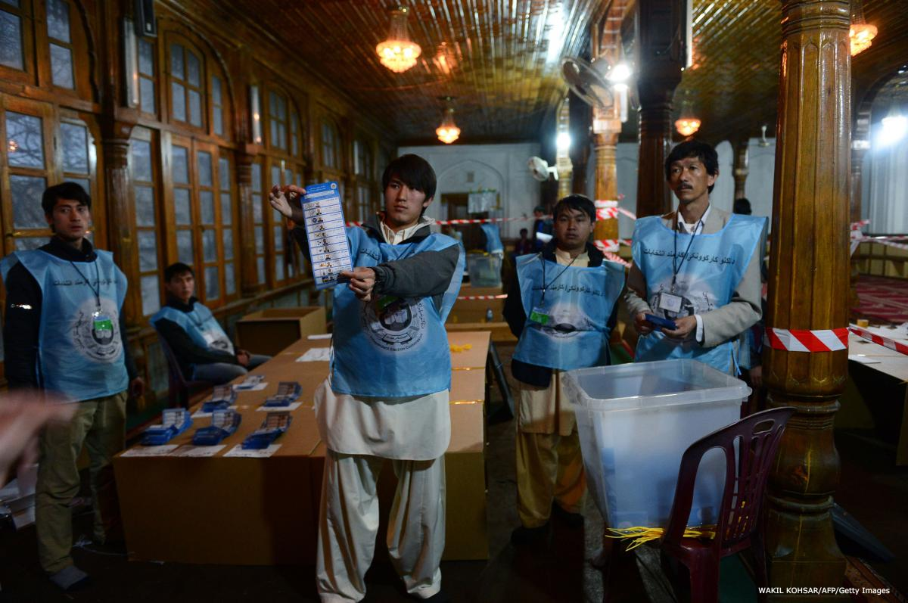

چارچوب سازمانی سلامت انتخابات
سلامت انتخابات بر شالوده سازمانی مقرر شده در چارچوب قانونی بنا میشود. این چارچوب مرکب از چندين سازمان و دستگاه اداری است.
بازيگران سازمانی اصلی در انتخابات عبارتاند از:
- طرفهای مسئول سياست انتخاباتی و اجرای آن – يعنی، نهاد سياستگذاری رأیگيری و نهاد مديريت انتخابات
- دستگاههای نظارتی
- سازمانهای احزاب سياسی و نامزدهای رقيب در انتخابات
- گروههايی که اقدام به تأثيرگذاری در نتيجه انتخابات میکنند
- ناظران مستقل روند انتخابات
- مطبوعات
- دستگاههای انتظامی، شامل دستگاههایی تحقیقاتی، دادستانها و دادگاهها
مهم است است که نقش هر يک از اين نهادها در چارچوب قانونی به روشنی تعريف شود. علاوه بر اين، تفکيک قوا و يک سيستم نظارتی منطقی میتواند به حفظ سلامت کمک کند. مثلاً، اگر به يک نهاد مديريت انتخابات نقشهای بسياری سپرده شود – مثل تدوين قانون انتخابات، کاربرد و اجرای قانون، و سپس ايفای نقش آخرین راه حل برای مسايل رأیگيری – ارزیابی نظارتی سازمانی اندکی برای اعمالاش وجود خواهند داشت.

تمهيدات مؤسسات و توافق بر سر اين ساختارها عوامل مهمی هستند که در سلامت انتخابات سهم دارند. يکی از پرسشهای اوليه سازمانی اين است که آيا بايد نهادهای مستقل سياستگذاری انتخابات و مديريتی وجود داشته باشند يا نه؟ در کشورهای در حال گذار با پيشينه سلطه تکحزبی يا دولت استبدادی، ايجاد يک کميسيون مستقل انتخابات امروزه به طور گسترده يکی از راهکارهای حياتی برای تضمين اجرای بیطرفانه انتخابات و جلب اعتماد رأیدهندگان و احزاب تلقی میشود.
اگر بازيگران سياسی و مدنی اصلی بر سر نوع چارچوب سازمانی که بايد اتخاذ شود توافق کنند، نتيجه، يک نهاد انتخاباتی معتبرتر خواهد بود. بدون چنين توافقی، نارضايتی و عدم اعتماد میتواند بلافاصله بروز کند و در سراسر اين روند شيوع و گسترش پيدا کند.
چه نظام سازمانی اتخاذ شده از طريق شامل کردن نمايندگان احزاب سياسی «متعادل» شده باشد يا رسماً مستقل باشد يا بخشی از نهادی دولتی باشد، بايد استقلال سياسی و مالی لازم را برای اجرای يک انتخابات آزاد، منصفانه و رقابتی داشته باشد. اين نظام بايد قادر باشد که مشارکت مساوی و منصفانه همه احزاب سياسی و نامزدها را تضمين کند.
در اینجا به بررسی مسئولیتها و اختیارات نهاد سیاستگذاری انتخابات به عنوان یکی از نمونههای چارچوب سازمانی برای تامین سلامت انتخابات میپردازیم.
نهاد سياستگذاری انتخابات
نهاد سياستگذاری انتخابات مسئول تهيه و تدوين سياستهای اصولی و سياستهای تصميمگيری مربوط به اجرای انتخابات است. حيطه اختيارات آن در کشورهای مختلف متفاوت است، اما هر يک بايد تصميمهای سياستگذاری مربوط به اجرای انتخابات را اخذ کنند. در بعضی موارد، يک نهاد سياستگذاری رأیگيری همچنين مسئول تدوين پيشنويس قانون انتخابات و نظارت بر رأیگيری است.
بازيگران مختلفی ممکن است در روند سياستگذاری و تصمیمگيری دخيل باشند. مثلاً، اگر اختيارات بر عهدهی پارلمان باشد، نهاد سياستگذاری انتخابات ممکن است تمهيدات قانونی را پيشنهاد کند و ممکن است به تهيه قانون کمک کند. انتخابکنندگان، رسانهها و ساير مشارکتکنندگان در روند رأیگیری نيز میتوانند با معلوم کردن ارزشها و اصولی که برایشان مهم است ايفای نقش کنند.
نقش نهاد سياستگذاری انتخابات در حفاظت از سلامت انتخابات شامل موارد زير است:
اتخاذ سياستهايی که سلامت انتخابات را حفظ میکند
نهاد سياستگذاری انتخاباتی بايد قادر باشد که نقش اوليه و اصلی خود را به شيوهای مستقل و غيرجانبدارانه ايفا کند. اين نهاد بايد به پرسشهايی درباره سياستگذاری سلامت انتخابات بپردازد.
- آيا انتخابات رقابتی و آزاد است؟
- آيا تاریخهای معين شده در تقويم انتخاباتی معقولند؟
- آيا چارچوبهای قانونی وسازمانی تضمينکننده برخورد مساوی و فرصت مساوی است؟
- آيا رایدهندگان میتوانند آزادانه و بدون مشکل ثبتنام کنند و رأی دهند؟
- آيا همه رأیهايی که به صندوق انداخته شدهاند به درستی شمرده و در نتايج رسمی منعکس میشوند؟
- آیا احزاب سياسی قادر به ثبت و شرکت در انتخابات هستند؟ آيا آنها برای مبارزات و تبليغات انتخاباتی و رساندن پيامشان آزاد هستند؟
- آيا همه احزاب و نامزدها دسترسی مساوی به رسانهها را دارند؟
- آيا حوزههای انتخابیه منصفانه ترسيم و تعيين شدهاند؟
- آيا فرمول توزيع منابع عمومی (مثلاً زمان پخش آزادانه يا بودجه عمومی برای تبليغات) منصفانه است و صادقانه اجرا میشود؟
تهيه قانونی برای رأیگيری که از سلامت انتخابات محافظت کند
اگر نهاد سياستگذاری انتخاباتی مسئول تدوين قانون است، بايد اطمينان حاصل شود که هر قانونی شامل تمهيداتی برای حفاظت از سلامت انتخابات نيز باشد. در ميان چيزهای ديگر، قانونگذاری بايد نقش و اختيارات هر يک از نهادهای درگير، قدرتی که برای ايفای نقشاش خواهد داشت و مکانيزمهای کنترلی را که در هر مرحله از اين روند بر آن مسلط خواهد بود، مشخص کند.
ارائه نظارت برای اطمينان از اینکه مکانيزمهای سلامت درست عمل میکنند
وقتی نهاد سياستگذاری انتخابات مسئول عمل به عنوان نهاد ناظر هم باشد، بايستی اطمينان حاصل کند که روند انتخابات به شيوهای بیطرفانه و شفاف پايان پذيرد و نتایج، بيان دقیق و صادقانهای از اراده رأیدهندگان باشد. همچنين بايد اطمينان حاصل کند که منابع عمومی ارائه شده برای برگزاری انتخابات کافی هستند و از آنها استفاده مناسب میشود و مسئولان انتخاباتی در قبال نحوه مديريت منابع مالی، برگزاری انتخابات و اجرای روند پاسخگو باشند.
مديريت انتخابات
نهاد مديريت انتخابات مسئول برگزاری انتخابات است. اين نهاد باید روالهای معينشده در چارچوب قانونی را صادقانه و بیطرفانه اجرا کند. اين امر متضمن رسيدگی به مسايل فنی و اخذ تصميمهاست. در بعضی موارد، اين نهاد باید مقررات انتخاباتی را نيز تدوین کند و معمولاً روالهايی را برای ثبتنام رأیدهندگان و نامزدها، رأی دادن و شمارش آراء مقرر میکند.
برای اجرای نقش اصلیاش در برگزاری انتخابات آزاد، منصفانه و قابل اعتماد، يک نهاد مديريت رأیگيری باید وظايف زير را انجام دهد.
اجرای روند انتخابات بر اساس قانون
مجريان انتخابات بايستی روند انتخابات را به شکلی بیطرفانه و بر اساس ضوابط قانونی انجام دهند. قوانين برای حفظ حقوق شهروندان و اصول پايه یک انتخابات آزاد و منصفانه و همچنين برای محدود کردن قدرت استصوابی مجريان تدوين شدهاند. قوانين بايستی اجرا شوند و نهاد انتخابات بايستی در قبال پيروی از آنها پاسخگو باشد. اگر مشکلی در خود قانون وجود داشته باشد، نهاد مديريت انتخابات بايد آن را به نظر مقامات ذیربط جهت اصلاح برساند به جای اینکه به طور گزينشی قانون را اجرا کند که به نوبه خود میتواند منجر به مخدوش شدن سلامت انتخابات شود. مثلاً، در انتخابات سال ۱۹۹۸ در کامبوج، نهاد مدیریت انتخابات کشور از همه ضوابط قانونی تبعيت نکرد و در نتيجه بسیاری از ضمانتهایی را که در قانون مندرج شده بودند سست کرد (مثلاً روند رسيدگی به شکايات).
حفظ اجرای حرفهای، بیطرفانه و شفاف انتخابات
اجرای حرفهای و شفاف روند رأیگیری برای انتخابات آزاد و منصفانه ضروری است. تصمیمگیری و عمليات بايد تا حد ممکن دقیق و شفاف باشند. نهاد مديريت انتخابات باید نهادی بیطرف ديده شود در غير اين صورت هیچ اعتباری نخواهد داشت. برای پرهيز از ايجاد شائبه جانبداری از يک نتيجه خاص، مجريان انتخابات بايد شفاف باشند و تا جای ممکن اطلاعات هر چه بيشتری را به موقع در اختيار احزاب سياسی، رسانهها و عموم مردم قرار دهند.
مؤسسه بينالمللی دموکراسی و کمک به انتخابات ( IDEA) الگويی از مقررات رفتاری برای مجريان انتخابات را تدارک دیده است تا به آنها در حفظ سلامت انتخابات ياری کند.
اتخاذ روالهايی برای حفظ سلامت عمليات رأیگيری
روالهای داخلی مديريت و عمليات که توسط نهاد مديريت انتخابات اخذ میشوند تأثیر مهمی بر سلامت روند انتخابات دارند. روالها بايد مکتوب شوند و به طور قاعدهمندی در اختيار عموم مردم گذاشته شوند. روالها به طور معمول همه جنبههای اجرای انتخابات، از جمله مديريت انتخابات، مديریت داخلی، استخدام و سرپرستی، و پيادهسازی روالها شامل مقررات تهيه و خريداری را در بر میگيرند.
شناسايی و ارزيابی ريسکهای سلامت و اتخاذ راهکارهای اصلاحی در موارد لازم
روالهای داخلی مديريت و عمليات بايد سازوکارهایی برای شناسايی ریسکهای سلامت انتخابات داشته باشند، ارزيابی ريسکهايی که وجود دارند و اطمینان از اينکه اشخاص مناسب يا دستگاههای نظارتی در جريان قرار میگيرند و اقدام اصلاحی بلافاصله اتخاذ میکنند. نهاد مديریت رأیگیری لازم است اطمينان حاصل کند که خود نيز ساز و کارهایی برای دريافت و رسیدگی به شکايات وارده از سوی احزاب سياسی، ناظران يا دستگاههای ناظر را دارد. این عامل مهمی است که در سلامت سيستم و بالا بردن پاسخگویی مجریان و شرکتکنندگان در انتخابات سهم دارد.
بالا بردن آگاهی رأیدهندگان از مسايل مربوط به سلامت انتخابات
تا جای ممکن، نهاد مدیريت انتخابات بايد اطلاعاتی را درباره سيستم انتخابات، سازوکارهای تأمين سلامت آن و نیاز به شهروندان برای ایفای نقشی فعال در حفظ روند رأیگيریشان، در اختيار شهروندان قرار دهد. اين اطلاعات میتواند از طریق جلسات رسانهای، برنامههای آموزش به رأیدهندگان و برنامههای آموزش مدنی در مدارس توزيع شود.
منبع: دورههای آموزشی بریج